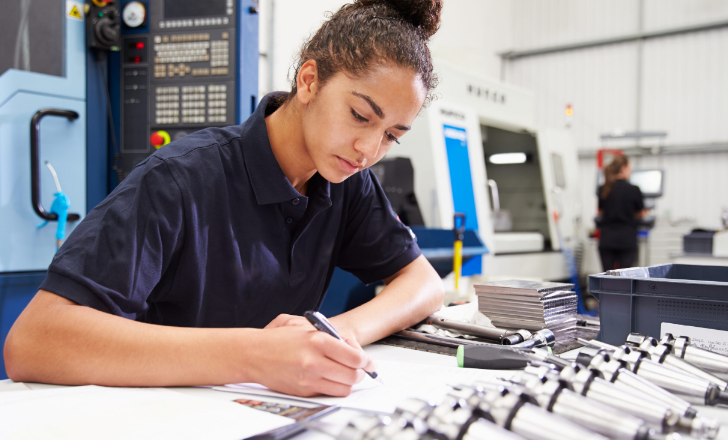
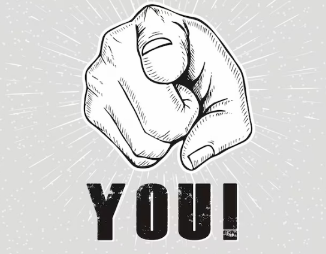

BRS Blenders is an innovative, next-generation beverage engineering company known for redefining what a "blender" can be. Founded on the principle that flavor should be both crafted and experienced, BRS focuses on creating precision-engineered blenders, mixers, and automated drink systems designed for home users, cafes, and commercial bars.
BRS Blenders strives to become the global leader in intelligent blending technologies by:
Reducing kitchen noise through next-gen acoustic dampening
Advancing sustainability with recyclable components
Ensuring one piece wont hinder your quality and safety, for longevity
Supporting cafes, restaurants, and mixologists with industrial-grade systems
The Magic Crew

Our primary crew focuses in creating safer, better, and affordable products. These magicians turn materials from our very own planet, into something meant to last and be apart of your life.
for safe usage, we often use tempered glass or industrial mesh infused plastic to prevent cracks or general wear, as well as easy cleaning. Our blades are made with high end stainless industrial steel, often enfused with a carbon finish. Finally, our magicians make sure every button feels responsive, friendly, and innovative.
You are apart of our family.

Your support matters
Every step we take is possible because of people like you - people who choose to stand with us, grow with us, and believe in our vision. You've become more than supporters; you've become a genuine part of our family. Your encouragement, trust, and loyalty mean more than words can express, and we are endlessly grateful to have you on this journey with us.